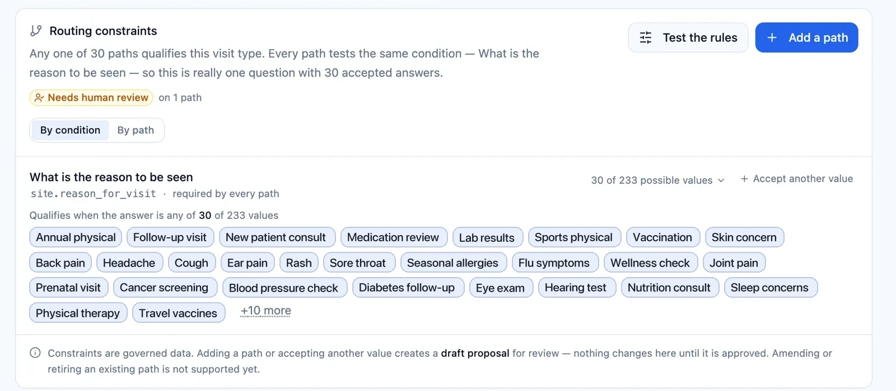

DexCare.ai Optimize
The AI knowledge layer for patient access. It takes a health system's scheduling rules, scattered across Epic build, Visio diagrams and people's heads, and turns them into one governed source of truth that every channel shares: call center, web, text, voice and chat.
- About 2,000 commits across 16 repositories in 2026, hands-on alongside the team
- 339 scheduling rules rebuilt from one health system's decision trees, across six service lines
- A self-maintaining staff wiki in production with two customers: 192 pages generated at negligible model cost
- The model proposes, a person approves, and a deterministic engine applies. AI never sits in the write path.
